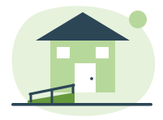

Er du over 62 år, kan du få dekket 25 prosent av det du oppgraderer boligen for. Tilskudd er penger du får, og som du ikke skal betale tilbake.

Bruk dette skjemaet hvis du ikke kan søke digitalt på husbanken.no. Skjemaet erstatter den digitale søknaden og inneholder de samme spørsmålene.
Ordningen gjelder husstander der minst én person er over 62 år. Vi spør ikke om helse, diagnoser eller inntekt. Ordningen handler om boligen, ikke om deg.
1.1 Er du over 62 år?
1.2 Hvem i husstanden er over 62 år?
Fyll ut bare hvis du svarte «Nei, men jeg bor sammen med en som er det» på spørsmål 1.1.
Tilskuddet gjelder boligen du bor i til vanlig. Både du som eier og du som leier kan søke.
Fyll ut bare hvis boligen har en annen adresse enn den du skrev øverst på side 1.
2.2 Eier eller leier du boligen?
2.3 Bor du i denne boligen til vanlig?
Tilskuddet gjelder ikke hytte, utleiebolig eller bolig du ikke bor i. Er situasjonen din spesiell, ring oss før du sender inn.
2.4 Bor du i borettslag eller sameie?
Skal du gjøre noe utvendig, må styret ha sagt ja. Innvendig arbeid trenger som regel ingen godkjenning.
2.5 Har styret godkjent arbeidet?
Fyll ut bare hvis du svarte «Ja» på spørsmål 2.4.
Du må velge minst én av de seks oppgraderingene, og du kan gjerne velge flere. Velger du flere, legger vi kostnadene sammen. Det er ofte slik man kommer over minstekravet på 80 000 kroner.
3.1 Hvilke oppgraderinger skal gjøres? Sett kryss for alt som skal gjøres.
Skriv med dine egne ord. To setninger holder. Du kan ikke skrive noe galt her. For eksempel: «Vi skal bytte badekaret med en dusj uten kant, og sette opp håndtak.»
Er du usikker på hva boligen trenger? Dette er gratis hjelp du kan be om før du fyller ut skjemaet:
Du trenger ikke ha snakket med noen for å søke. Men mange synes det er lettere.
Bruk summen fra tilbudet. Ta med arbeid, materialer og merverdiavgift, men ikke møbler, hvitevarer eller ting du kjøper løst.
4.1 Hva kommer oppgraderingen til å koste, og hva får du?
Er du usikker på regnestykket, fyller du ut bare linje A og lar resten stå åpen. Vi regner det ut for deg.
Vi trenger å se hva fagpersonen har gitt deg pris på. Har du bare papiret, kan du legge en kopi i konvolutten, eller ta bilde av det med mobilen. Du trenger ikke skanner.
Sett kryss for hva dokumentet viser, slik at vi raskt kan kontrollere det:
Opplysningene stemmer så langt jeg vet. Oppdager jeg noe feil etterpå, retter jeg det opp ved å ringe eller skrive til Husbanken. Jeg gir Husbanken tillatelse til å hente opplysninger fra Folkeregisteret og Kartverket, og til å kontakte fagpersonen som har gitt tilbudet.